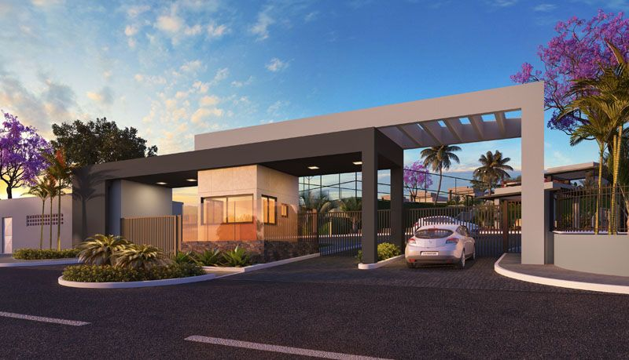
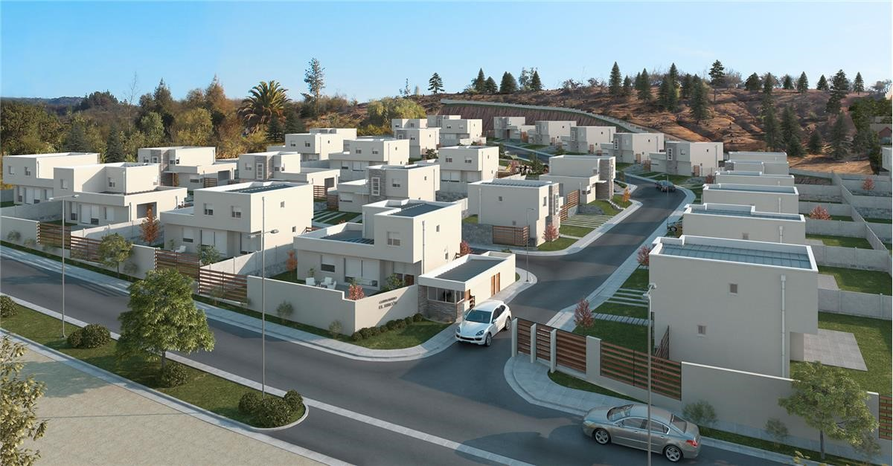
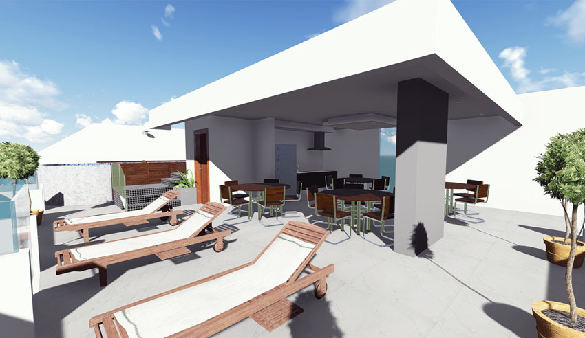

Alamedas de Santa Ana



Acerca del Residencial
Nosotros
En Alamedas de Santa Ana nos gusta que todos nuestros condóminos se sientan en un lugar seguro con todas las amenidades que puedan necesitar. Contamos con algunas reglas básicas para el bienestar de todos:
- Respeto mutuo: Tratar a los vecinos con respeto y consideración para mantener un ambiente pacífico.
- Horarios de silencio: Respetar los horarios establecidos para evitar ruidos molestos, especialmente en la noche.
- Áreas Comunes: Usar jardines, piscinas, etc. de forma adecuada y dejarlas limpias después de su uso.
- Mascotas: Cumplir con las normativas, mantener higiene y respetar las áreas públicas.
Para cualquier eventualidad no dude en comunicarse al: 2425 2623.